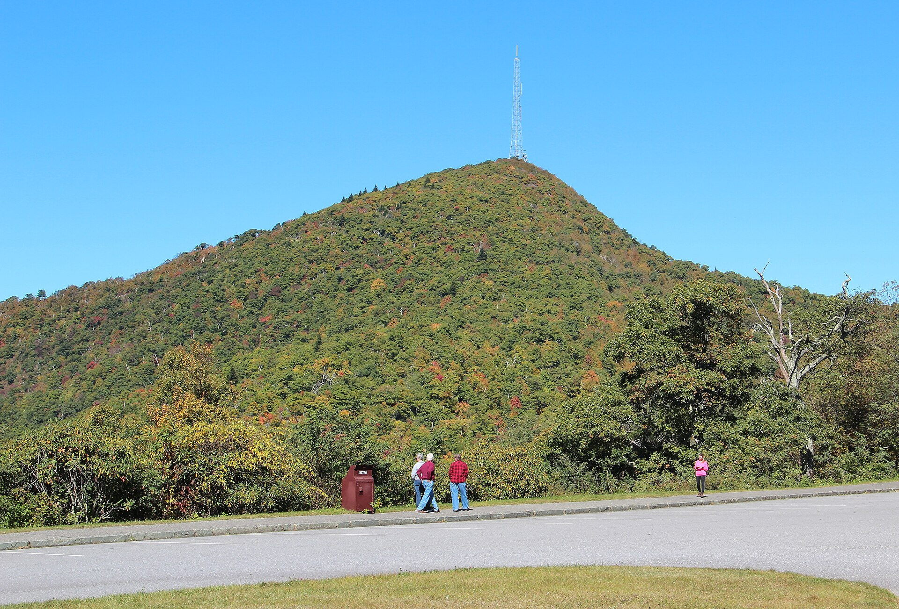
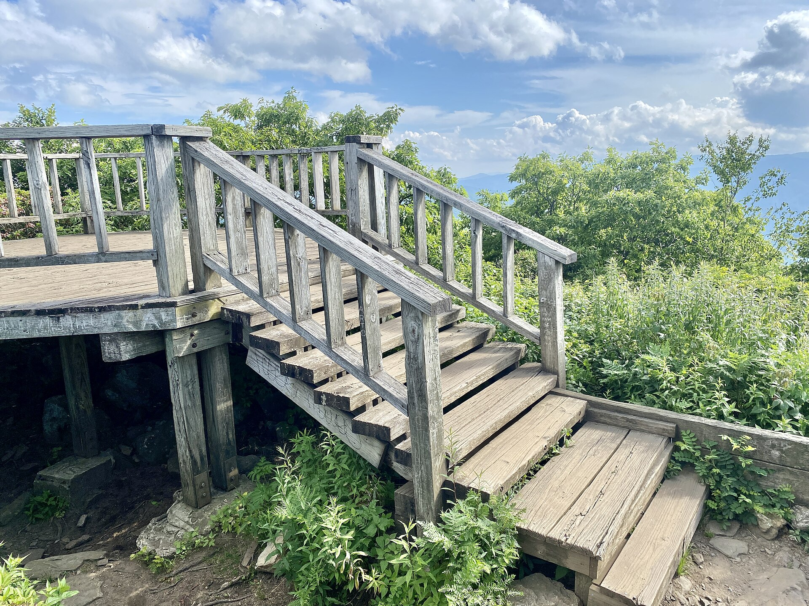
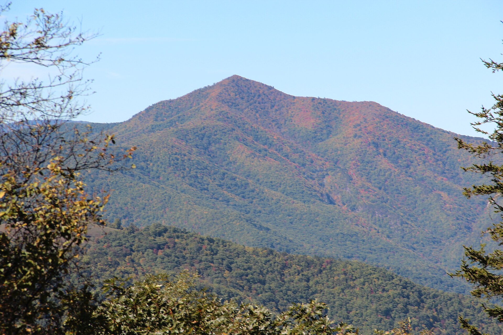
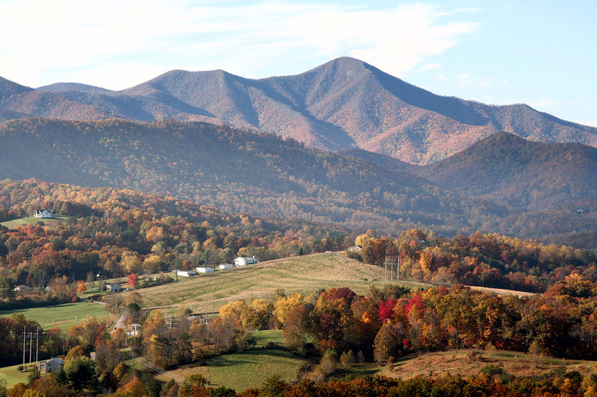

Eli, this is the one: sleep under the trees at nearly 5,000 feet, then walk up a named summit in the dark and watch the sun hit the Blue Ridge from the observation deck.
Martin and Eli. One night at Mount Pisgah Campground. One hike from camp to the Mount Pisgah observation deck for sunrise (~7:27 AM EDT on 2026-10-04). Fall color on the Parkway. No separate trailhead drive: the trail leaves from where we sleep.
About 5–6+ miles round trip from camp, steep and rocky near the top. Optional Buck Spring side-spur on the way. Leave camp around 5:00–5:30 AM with headlamps.


Start at camp in the dark. Follow the campground connectors toward the Inn corridor, then the Mount Pisgah Trail (about 1.6 mi / ~712 ft from the lot start; longer from camp). The finish is steep and rocky. At the top: the observation deck, 5,721 ft, with views toward Asheville, the French Broad, and Shining Rock on a clear morning.
Want a quieter approach? Swing onto the Buck Spring Trail (Mountains-to-Sea) as a side-spur: lodge site foundations, gap overlooks, then rejoin for the final climb. Same outing, same summit.
Sun times from the timeanddate Asheville-area table for 2026-10-04. Check Parkway status morning-of: road closures.
Blue Ridge Parkway MP ~408.8. Night of 2026-10-03, checkout morning of 2026-10-04 after the hike. Drive-up pads, no hookups. Showers in Loops B and C, flush toilets, potable water.
If we get a pick of sites: A33 first, then B26 (Loop B is closer to showers). Either works.
Truck: Rivian R1T with Dual Large pack. Leave home with a full charge. Hit Asheville charging before climbing onto the Parkway so overnight Camp Mode has reserve. Do not arrive thin.
Skinny Dip Falls at Looking Glass Rock Overlook (MP 417), about 15 minutes south on the Parkway, ~0.8 mi RT. Only after the sunrise hike, and only if legs and time still feel good. Crabtree Falls and Linville Falls campgrounds are closed in 2026 (Helene recovery).

Personal planning draft for Martin and Eli · Mount Pisgah weekend 2026-10-03 / 2026-10-04.
Updated 2026-09-02.
Photos (Wikimedia Commons): hero, Mount Pisgah (North Carolina) Oct 2016 by Thomson200 (CC0); observation deck by Warren LeMay / w_lemay (CC BY-SA 2.0); Cold Mountain view by Thomson200 (CC0); fall summit by PBarn424 (CC BY-SA 4.0). See images/CREDITS.txt.